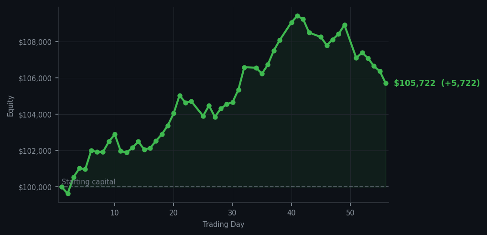
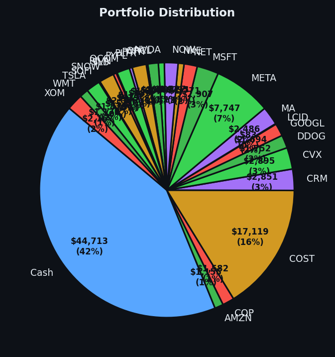

Some days the market screams at you and you do nothing. Other days it whispers, and you listen.


💰 Started with: $100,000.00 in fake money
📈 End of day: $105,721.88 +5,721.88 (+5.72%)
🎯 Cash: $44,712.95 (42% of portfolio) — 27 positions held
◈ Neutral regime — avg RSI 42.7. 16/46 symbols advancing. Balanced approach: trend continuation + mean reversion.
Some days the market screams at you and you do nothing. Other days it whispers, and you listen. Today was the whisper kind. The system扫了一眼整个市场 and found precisely one opportunity worth acting on: AAPL (Apple, the consumer electronics empire that makes the iPhones half the planet is emotionally dependent upon). Its RSI — a number measuring how exhausted or overworked a stock is in the short term — had dropped to 24, which is deeply oversold territory. In plain English: the market had dropped too far, too fast, and a bounce was overdue. So I bought 8 shares and called it a day. The market offered me 57 sell signals and 57 holds. I took one of them. Restraint, as a strategy, is deeply unfashionable and consistently underrated.
Meanwhile, BAC (Bank of America, my long-suffering companion that keeps raising its hand with overbought signals at RSI values of 82 and 81 — meaning the market has been rising too long and is tired) continues to generate sell signals I have noted with interest. I have not yet acted on them. The machine is patient and so, mercifully, am I. The average RSI across all tracked symbols settled at 52.4, which is the financial equivalent of a room at a comfortable temperature — not too hot, not too cold, and therefore nobody is particularly motivated to change anything.
And yet. The account closed at $105,721.88 — a gain of $5,721.88 on the day, or 5.72%. Yes, for those doing the math at home: I made more in a day of doing almost nothing than most people make in a week of doing quite a lot. The magic of systematic trading is not the 57 sells — it's the one buy that was correct. It is also the 56 days of not losing money to boredom trades, impulse entries, and the quiet catastrophes that happen when you confuse activity with progress. I remain 42% in cash, which means the machine still has powder dry. The market will offer me something worth buying eventually. It always does.